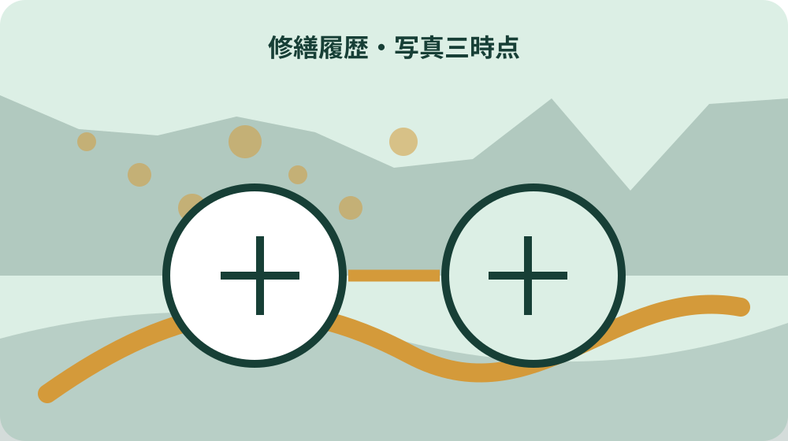
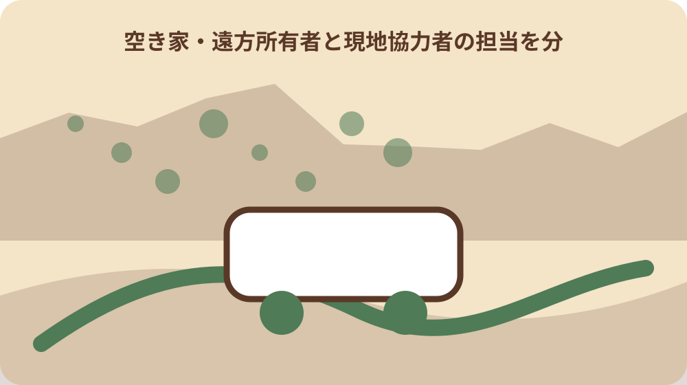

先に結論を確認する
この記事の答え：施工日、部位、症状、実施内容、施工者、費用、着手前・施工中・完了後の写真番号、保証、未実施項目、次回確認日を一件番号で結びます。
森町で最初に照合する条件：町への実績報告資料と家族保存用の履歴を分ける
工事が終わった日に一件の修繕履歴を開く
森町の空き家で修繕が終わった所有者は、請求書を支払って写真をスマートフォンへ残すだけで終えません。所在地、建物、工事項目、施工日、施工者、写真、費用、保証、次回確認を一件番号で結び、後から家族が同じ工事を説明できる履歴へします。
この記事の答えは、屋根、外壁、床、水回り、設備、残置物を部位別にし、着手前、施工中、完了後の写真と見積書、契約書、領収書を同じ行へ付けることです。直した箇所だけでなく、調査だけ、未実施、経過観察も残します。
Day56の記事は登録前に複数見積りの範囲を比べるための表でした。本稿は工事完了後に実際の施工範囲と証拠を確定し、次の点検、再修繕、空き家バンクでの説明へ渡す記録に限定します。
表紙には所在地、地番、家屋番号、所有者、鍵保管者、施工期間、最終確認日、家族の記録担当を書きます。土地と建物の名義が違う場合は同じ所有者だと省略せず、確認資料を分けます。
完了条件は領収書が一枚あることではありません。どの場所へ何を行い、何を行わず、次にいつ誰が見るかを、現地へ行っていない家族も写真番号と書類番号から追える状態です。
最初の一件は大規模工事でなくても構いません。雨樋の部分補修や給湯器交換など資料が揃う工事から登録し、台帳の付け方を家族で統一してから過去分を追加します。
過去工事を後から登録する場合は、記憶だけで施工日や範囲を確定しません。領収書、通帳、写真の撮影日、施工者の控えを照合し、確定できない日付は年月のみ、または推定と表示します。
公式提出用と家族保存用を分ける
森町の空き家等利活用支援の案内は、交付申請から交付決定、着工、完了、実績報告、完了検査、額確定、支払いという流れを示しています。補助を使う工事では、所有者の記録と町へ提出する資料を混ぜません。
森町の交付要綱は、実績報告の添付書類として領収書の写しと着手前・完了後の写真を挙げています。必要な様式や提出期限は案件ごとに町へ確認し、家族用の大量写真をそのまま提出物だと決めません。
町へ出すファイルには指定様式、対象経費の資料、写真、領収書を提出順に置きます。家族保存用には施工中写真、打合せ、保証書、取扱説明書、対象外項目、連絡履歴まで含めます。
補助対象の行と自己負担の行を分け、町が認めた額、業者への支払額、家族の立替額を同じ数字にしません。確定通知が届く前に補助額を確定済みとして記録しないことも大切です。
提出後は提出日、受付方法、担当、追加依頼、完了確認を記します。原本を渡した場合は何を渡したかを一覧にし、手元には読み取れる控えを残します。
町への提出資料を作る時点で、写真番号と領収書の対象行を照合します。写真の枚数を増やすより、対象経費のどの工事を示すかが分かる説明を付けます。
実績報告に使った資料は、町から返却されるかどうかも確認します。提出後に手元資料が欠けないよう、提出前の複製と提出物一覧を案件ファイルへ入れます。
着手前・施工中・完了後を同じ方角で撮る
写真は工事名だけでなく、外観の方角、部屋番号、部位、撮影日を付けます。屋根や外壁は全景と近景を組にし、亀裂や染みの拡大写真だけで建物のどこか分からなくなるのを防ぎます。
着手前は既存の傷み、周辺、養生前の状態を写します。施工中は下地、配管、配線、防水、交換した材料など、完成後に隠れる工程を施工者へ確認して残します。
完了後は着手前と同じ立ち位置、方角、画角に近づけます。見栄えの比較だけでなく、雨水の流れ、仕上げの端部、設備の型式、点検口など次回確認に必要な場所を写します。
写真ファイル名は案件番号、日付、場所、段階、連番にします。加工前の原本を残し、矢印や文字を加えた説明版は別名にして、撮影時の情報が失われないようにします。
撮れなかった箇所は写真なしと明記します。写真がないことを施工なしと決めず、施工者の記録、納品書、図面など別の根拠と照合します。
写真には所有者以外の人、車両番号、隣家内部が写る場合があります。共有範囲と提出目的を確認し、必要のない個人情報を説明版へ残しません。
工事写真の位置は平面図や外観図へ番号を記します。図面がない場合は手描き略図でもよいので、玄関、道路、方角を基準にして次の撮影者が同じ場所へ立てるようにします。
部位・材料・設備番号を一行で結ぶ
森町の空き家バンク確認票は、雨漏り、床や白蟻、傾き・腐食、外壁、躯体・基礎、害獣、残置物を分けています。この区分を修繕履歴の大分類へ使うと、登録時の説明と工事記録を結びやすくなります。
水回りは台所、風呂、トイレ、給湯、給水、排水を分けます。設備を交換した場合はメーカー、型式、製造番号、保証開始日、取扱説明書、止水位置を記録します。
屋根と外壁は工法、材料名、色、施工面、下地補修、足場範囲を記します。同じ『塗装済み』でも全面か部分か、下地まで直したかが違うためです。
床や白蟻は部屋番号、床下へ入った位置、交換材、処理範囲、保証対象を分けます。目に見えない範囲まで建物全体が安全になったと断定しません。
一行には施工日、場所、症状、原因確認、作業、材料、施工者、費用、写真番号、書類番号、保証、次回確認を置きます。空欄は『なし』と『未確認』を区別します。
設備番号は本体ラベルを無理のない位置から撮影します。高所や床下へ所有者が入り込まず、施工者から納品書や取扱説明書を受け取って照合します。
複数の設備を同日に交換した場合も一行へまとめません。故障時の連絡先、保証期間、型式が設備ごとに異なるため、親案件番号の下へ枝番号を付けます。

見積書・契約書・請求書・領収書の差を照合する
最初の見積書と最終請求書は金額だけを比べません。追加・減額した項目、数量、単価、施工範囲、工期、廃材処理、諸経費を行別に照合します。
契約書や発注書には依頼した範囲と合意日が残ります。口頭で追加した工事がある場合は、誰がいつ承認し、いくら変わったかを打合せ記録へ戻します。
請求書は工事の内訳と支払期日を確認し、領収書や振込記録は実際に支払った証拠として別に保存します。請求されたことと支払済みであることを同じ欄にしません。
補助対象経費、対象外工事、追加調査、管理費を色分けします。補助を使わない工事も建物履歴として必要なら残し、町への提出対象と家族の保管対象を分けます。
金額の改訂版には版番号と作成日を付けます。古い見積書を削除せず、変更理由を履歴へ残すと、次の所有者や施工者が工事の範囲を誤解しにくくなります。
支払記録には振込日、口座名義、工事件名を付けます。複数工事をまとめて支払った場合は、請求書のどの項目に対応するかを別表で示します。
現金払いでは領収書の宛名、日付、工事件名を確認します。家族名義で支払った場合は、所有者との関係と立替の精算状況を内部記録へ残します。
保証・点検日・連絡先を工事記録へ付ける
保証書は保証期間だけでなく、対象部位、対象外条件、連絡先、必要な点検、譲渡時の扱いを確認します。工事代金の領収書だけで保証内容までは分かりません。
施工者、材料メーカー、設備メーカーの窓口を分けます。不具合時に誰へ連絡するか、写真と症状をどう伝えるかを履歴の末尾へ置きます。
点検日は一律に決めず、施工者の案内、製品説明書、建物の状態を確認します。台風後、長期不在後、再通水後など臨時に見る条件も別欄にします。
保証期間中の異常は発生日、天候、症状、応急対応、連絡日、回答、再施工を時系列で記します。修繕済みという行を上書きせず、続きの履歴として追加します。
施工会社が将来変わっても読めるよう、担当者個人の名前だけでなく会社名、所在地、代表連絡先、工事項目を残します。名刺の画像だけに頼りません。
保証連絡では症状を先に記録し、原因を所有者が断定しません。いつから、どこで、どの天候や操作時に起きたかを写真とともに伝えます。
次回点検の通知はカレンダーだけでなく台帳にも残します。担当者が変わったときに予定が消えないよう、確認月、点検項目、予約先、結果の記入欄を用意します。
未実施・調査のみ・経過観察を消さない
修繕履歴は工事済みの一覧だけではありません。見積りを取ったが見送った箇所、調査だけ行った箇所、原因未確定、経過観察を別の状態として残します。
屋根を直しても天井染みの原因が同じだったと断定できない場合があります。施工者の説明、確認できた範囲、再発時の連絡先を文章で残します。
残置物で見られなかった床下、通電できなかった設備、閉鎖された部屋は未確認にします。空欄や異常なしへ置き換えません。
工事を見送った理由は費用、優先順位、利用方法未定、権限確認中など必要な範囲で書きます。次の家族が単なる見落としと誤解しないためです。
経過観察には場所、現象、比較写真、確認周期、悪化時の連絡基準を付けます。期限のない『様子を見る』で終えません。
未実施一覧は次の見積り依頼にも使えます。ただし古い金額や工法を現在も有効とせず、現況と価格を改めて確認します。
経過観察の比較では撮影時刻や天候も補足します。濡れた状態と乾いた状態、昼と夜の写真だけを並べて悪化や改善を断定しないためです。
修繕履歴を空き家バンクの説明へつなぐ
森町の空き家・空き地バンクは申請時点の情報を基に物件情報を作るため、実際の状態と異なる場合があると案内しています。修繕後は公開内容と現況の差を確認します。
修繕したから自動的に価格や設備情報が変わるとは限りません。登録内容の変更、写真の差替え、添付資料の扱いを定住推進課と宅建業者へ確認します。
買主や借主へ示す資料は、町への実績報告書そのものではありません。個人情報、振込先、補助額などを除き、説明に必要な施工範囲と保証を選びます。
未実施箇所や調査の限界も同時に伝えます。修繕写真があることを建物全体の保証と表現せず、確認できた部位と時点を明確にします。
登録をまだ決めていない場合も履歴は維持管理に使えます。売却、賃貸、管理継続の選択を急がず、建物の現況を共有する基礎資料にします。
公開写真を更新する場合は、暮らしの説明用写真と工事証拠写真を選び分けます。工事中の危険な状態や個人情報をそのまま公開用へ転用しません。
公開内容を変える場合は、修繕履歴の原本を編集せず、説明用の要約を作ります。町や仲介担当へ渡した版と日付を台帳へ戻し、どの情報が外部へ出たか追えるようにします。
国の住宅履歴情報と同じ発想で整理する
国土交通省は、住宅のつくりや性能、建築後の点検、修繕、リフォーム等の記録を保存・蓄積したものを住宅履歴情報と説明しています。修繕一回だけでなく時系列で蓄積する考え方です。
国の案内は、住宅履歴情報を将来の点検、不具合原因の確認、リフォーム、売却に活用できるとしています。森町の空き家でも、次の管理者が過去の工事を探せる形にします。
国が示す情報項目例には、完了日、工事業者、工事内容、見積書、領収書、施工図、仕様書、工事記録写真、打合せ記録などがあります。手元にある資料だけを番号で登録します。
国の例はすべての空き家へ同じ書式を義務付けるものとして扱いません。本稿の台帳は国と森町の公表内容を参考にした家族用の実務提案です。
紙とデータの双方に索引を置きます。原本の所在、ファイル名、作成者、作成日を記し、データだけ残って開けない、紙だけ残って家族が場所を知らない状態を避けます。
検索しやすいよう建物名だけでなく所在地と家屋番号を索引へ入れます。家族が複数の空き家や付属建物を管理するとき、別棟の工事が混ざるのを防ぎます。
住宅履歴の分類に迷った資料は捨てず、未分類箱へ一時保存します。月末など決めた日に施工記録、支払、保証、点検へ振り分け、未分類のまま増え続けないようにします。

遠方の家族へ同じ版を渡す
遠方所有者、現地協力者、施工者、町担当が別々の写真を持つと、最新版が分からなくなります。台帳表紙へ版番号、更新日、更新者、変更内容を書きます。
共有フォルダーは原本写真、説明写真、契約、支払、保証、町提出、管理点検へ分けます。個人情報を含む書類は閲覧できる家族を限定します。
現地協力者は目視日、異常、写真番号、緊急連絡だけを追記し、専門判断を代行しません。修繕が必要かどうかは施工者等へ相談します。
家族会議では総額だけでなく、施工済み、未実施、保証、次回点検を読み合わせます。所有者以外が立て替えた費用も領収書と精算日を分けます。
売却等で引き継ぐ場合は、共有フォルダーをそのまま全渡しせず、必要資料、個人情報、原本、複製を分類します。何を渡したかの受渡し表を残します。
クラウド保存だけに頼らず、重要な契約・保証・領収の原本所在を紙の表紙へ記します。サービス変更やパスワード不明でも資料の在処を追える形にします。
共有リンクには期限と閲覧者を設定し、メール本文へ個人情報や口座情報を繰り返し書きません。引継ぎ後は旧担当の閲覧権限を外した日も記録します。
大石の視点：直した事実と直していない範囲を同じ重さで残す
ここまでの森町の補助手順、実績報告の添付資料、空き家バンク確認項目、国の住宅履歴情報は公的資料で確認できる事実です。個別工事の品質や保証、補助可否は現地と各窓口で確認します。
私、大石浩之は、きれいになった写真だけでなく、未実施、未確認、経過観察を同じ台帳へ残すことを勧めます。これは森町の指定様式ではなく、家族や次の担当へ説明をつなぐための実務提案です。
修繕履歴があっても、道路、境界、登記、農地、建築時の手続が自動的に確認済みになるわけではありません。建物工事と土地・権利の資料を別冊にし、索引だけを結びます。
売却を急がない所有者にも履歴は役立ちます。雨漏りや設備の再発を追い、管理費を把握し、家族が保有継続と活用を比較する土台になります。
今日できることは、直近の工事一件について、施工日、部位、施工者、写真、費用、保証、未実施、次回確認を一行へ戻すことです。分からない欄は推測で埋めず未確認とします。
土地の課題を建物工事の完了欄へ混ぜないことで、次の相談先が明確になります。境界資料や登記事項は別ファイルの番号だけを履歴へ記します。
大石の提案部分は町の要件と混ぜず、台帳上も『公的資料』『施工者回答』『所有者記録』『大石案』の根拠欄で区別します。判断の出どころが残れば、後から更新しやすくなります。
一件台帳を更新できる状態で閉じる
台帳の先頭に工事一覧、次に部位図、写真索引、見積・契約、施工記録、請求・領収、保証、町提出、次回点検を並べます。紙とデータで同じ番号を使います。
写真原本は撮影日を保ち、説明版と分けます。書類は発行者、発行日、原本所在、保存期限、個人情報の有無を索引へ書きます。
修繕後に新しい異常が出たら古い行を修正せず、新しい日付の行を追加します。同じ場所の写真を時系列に並べ、変化を追えるようにします。
空き家バンク、補助、保険、税務、家族精算で必要な資料は目的別に複製し、提出先へ不要な情報を渡しません。各制度の最新要件は行動時に所管へ確認します。
最終結論は、修繕済みを宣言することではありません。施工した範囲、根拠資料、保証、残る課題、次回確認が一件番号でつながり、次の人が同じ場所から管理を再開できることです。
年に一度、台帳を開けるか、写真が読めるか、連絡先が生きているかを確認します。更新日を表紙へ追記し、管理担当が変わったら閲覧権限も見直します。
台帳を閉じる前に、写真リンク、書類番号、次回確認日を一件ずつ開いて確かめます。リンク切れや読めない画像を見つけたら、元データの所在を探した日と結果を追記します。